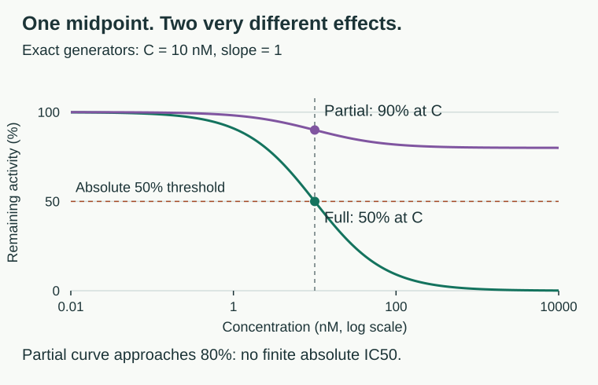
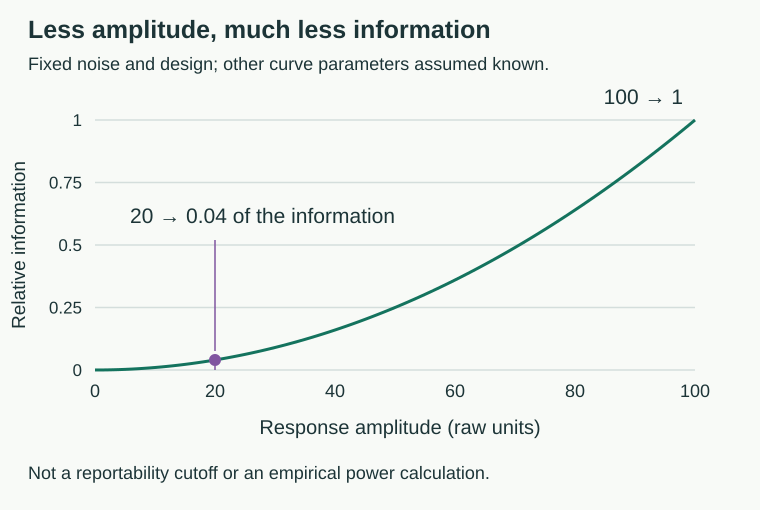

![Figure 1. One small response, three different evidentiary situations. Original synthetic data use seed 42, thirteen concentrations, three wells per dose, and eight wells per independent control. Blue points are individual independently normalized wells; dark points are dose means; green is the fitted free 4PL; purple dashes show the known generator transformed using the observed controls; gray dashes show the constant fit. Noise is the generating well-level SD in raw units, not an estimated SNR. The same random draws are used across panels. Fitting all three is possible; locating a meaningful midpoint is not.](figures/weak-response.svg)
Data-Rich, Insight-Poor · 99 Small Problems, installment 09. Companion to Curve Check v0.4.0 · October 31, 2026.
I am looking at a concentration series that barely persuades me it is different from a flat line. The assay has a one-hundred-unit reference window; the underlying response in this synthetic experiment changes by twenty, while individual wells carry a noise standard deviation of twenty units. The software nevertheless returns a smooth logistic curve and a midpoint. It has done the fitting. Whether we have measured a reportable potency remains somebody else’s problem, unless the workflow has quietly eliminated that somebody.
This is not an argument against automation, nor a rule that twenty-percent responses are uninteresting. I can reduce the noise while leaving that same small response unchanged, and the midpoint becomes much easier to locate. I can also remove the response entirely and still ask the optimizer to return four parameters. The distinction I care about is whether the pipeline preserves these different experimental situations or gives all three the same well-formatted answer.
The same danger appears farther downstream. A compound can inhibit the reporter used to measure a biological process and produce a reproducible concentration response, complete with potency, concentration dependence, and structure–activity relationships (Auld and Inglese, Assay Guidance Manual). The fitting algorithm may be entirely correct about that response while the caption quietly assigns it to the protein we hoped to study.
This is the distinction I want to keep visible whenever somebody asks whether we can report an IC50. There is the numerical question of whether a midpoint is located, the analytical question of whether the signal measures the intended quantity, and the biological question of what caused that quantity to change. I regard those as separate obligations. A polished figure can make their boundaries harder to see without supplying any of the missing evidence.
The useful question is therefore larger than “is this a curve?” Sometimes there is no resolvable transition, sometimes there is a transition without an identifiable midpoint, and sometimes the midpoint is remarkably precise for an effect that has been assigned to the wrong mechanism. The practical objective is to identify which problem we have before deciding what the number deserves to be called.
I have already addressed the distinction between optimization and measured potency in “Convergence Is Not Measurement,” with the censored-potency package comparing unconstrained and constrained fits and asking whether observations locate the midpoint (censored-potency). Censor Check then follows reported numbers into tables, examining what happens when bounds are removed or measurements from different papers are pooled (Censor Check). Another installment that merely adds more suspicious sigmoids would repeat the first argument while borrowing the second’s vocabulary.
Comparability Check already asks which claim a comparison supports, separates lot from method effects, and includes unequal-slope comparisons; Crosstalk Check already uses interventions and alternative readouts to distinguish signaling explanations (Comparability Check; Crosstalk Check). The image-analysis work in “The Threshold Is Part of the Measurement” also establishes processing choices as part of the measurement rather than decoration (measurement-processing simulations). These are foundations to acknowledge, not discoveries to announce again.
The narrower job here is the source-to-claim handoff for a concentration-response record. I want to retain the original sample signals, the control observations, the exact transformation, the numerical result, and the evidence that remains missing in one reconstructable record. The fitting question still matters, but it becomes one stage of an audit rather than the product’s entire purpose.
For the central example, I stipulate a decreasing response with true upper and lower signals of 100 and 80, a relative midpoint of 10 nM, and slope 1. There are thirteen log-spaced concentrations from 0.01 to 10,000 nM, three wells per concentration, and eight wells for each independent reference control. Independent Gaussian noise is added to sample and control wells. These are the generator’s settings, not parameters recovered from an experiment and certainly not recommended universal assay-design specifications.
Twenty out of one hundred describes a fraction of the available response window, not a complete signal-to-noise ratio. A twenty-unit effect against one unit of well-level noise is a different experiment from the same effect against twenty units of noise. The companion tool therefore offers three matched presets: the twenty-point response with substantial noise, the same response with low noise, and a genuinely constant generating response with substantial noise. Presets preserve the selected random seed, so the comparison changes the stated experimental property rather than quietly choosing a more cooperative set of random draws.
I deliberately keep the full control window visible and let the reader reveal the known generating response separately from the fitted candidate. The overlay is available only when its recipe reproduces the exact synthetic input; it disappears for unverified data. A new realization can change the apparent pattern, sometimes considerably. The seed is therefore part of the exported record, not a setting to keep changing until the desired verdict appears.
There are several different “twenties” one could confuse here. The true twenty-point amplitude is known because I constructed the simulation. The observed low-versus-high dose contrast is a noisy description of those data; the difference between fitted asymptotes is a model estimate that may be poorly constrained; and the observed maximum-minus-minimum range selects the most extreme concentration means. In the default realization, that last range is about 49.8 percentage points even though the true raw amplitude is twenty. Noise and estimated control normalization have not discovered a larger biological effect. They have changed the observations from which the range was calculated.
To make that distinction visible, the tool also reports the signed difference between the averages of the three lowest and three highest positive-dose means. Those groups are chosen by concentration, not by which responses look most impressive. This edge-group contrast remains descriptive: it is neither a fitted Emax, evidence that plateaus have been sampled, nor an uncertainty interval. The within-dose estimate of mean-level technical noise answers another question again; it does not include all uncertainty from controls or independent runs.
The constant comparator asks whether the more flexible curve earns its additional parameters under a particular working model. Both fits use the same concentration means and assume independent Gaussian errors with common unknown variance; AICc counts two parameters for the constant model and five for the free 4PL, including variance. In the default synthetic realization, the logistic candidate reduces RMSE from approximately 12.9 to 8.76 percentage points, but its AICc is about 3.26 higher than the constant model’s. The optimizer has improved the residual sum of squares without making the curve the preferred description by this diagnostic.
I would not turn that difference into a p-value, an assay acceptance limit, or a probability that the compound is inactive. There is an additional mathematical caution at the flat limit: when the two logistic asymptotes coincide, every midpoint and slope produces the same constant response. Those parameters are unidentified, not merely imprecise. A routine information-criterion calculation does not remove that singularity, and a conventional parameter-count likelihood-ratio significance claim would need separate justification. In this example the 4PL also reaches a numerical boundary, another reason to inspect the fit rather than promote the comparison into an adjudicator.
Nor does preference for the constant model demonstrate equivalence to zero effect. “This experiment did not resolve a concentration response” and “this experiment excludes effects large enough to matter” are different statements. The latter needs a prospectively justified effect margin and an uncertainty analysis suited to that purpose. Conversely, a sufficiently precise small effect may be distinguishable from flat without being biologically consequential, and its midpoint may be localized without the response ever reaching fifty-percent inhibition. Evidence for a change, evidence about its magnitude, and evidence for a particular potency claim should not be collapsed into one traffic light.
The concern about automation is therefore not that a person must manually draw every curve. It is that removing a review step can also remove the question that step was meant to ask. I would require explicit paths for unresolved, partial, nonmonotone, and unsupported responses, together with the reason a result was withheld and the evidence needed to reconsider it. Exception handling belongs in the scientific specification, not in a footnote about software failure. Nothing in this argument requires assuming that a particular company, product, or staffing decision has caused such a failure.
The new starting point in Curve Check is a raw table with three fields: role, concentration, and signal. Sample wells retain their concentrations in nM; neutral and independently defined full-effect reference wells retain their measured signals. The tool computes control means and observed standard deviations, reconstructs independent-control normalization, and places a deliberately questionable sample-min–max branch beside it. Both branches use precisely the same sample observations.
This comparison makes the processing contribution inspectable. It does not invite the user to choose whichever normalization produces the most agreeable midpoint. The counterfactual branch is explicitly withheld as a basis for a control-defined potency claim, because its reference is supplied by the samples being judged. The original wells remain in the evidence record even if the reconstructed curve looks much more convincing.
The distinction is equally important for the input itself. A row labeled “full” does not establish that a reagent produced the relevant full-effect state, and a filename does not establish that a stock concentration was correct. The tool can verify its arithmetic against the supplied rows; it cannot verify the experimental identity or suitability of those rows. Evidence-reference fields therefore preserve the user’s declarations without converting completed text boxes into a validation certificate.
I also want the report to survive an ordinary handoff. A downloadable record includes the exact CSV, processing branch, source identifier, endpoint, exposure notes, control statistics, numerical analysis, and unresolved limitations. Restoring it recalculates from the raw text rather than accepting saved results. A SHA-256 fingerprint, when the browser supports it, identifies those text bytes; it neither authenticates the experiment nor makes a mislabeled sample more truthful.
The relative midpoint of a four-parameter logistic model is halfway between its fitted upper and lower asymptotes, whereas an absolute, control-defined IC50 refers to a response halfway between independently defined assay controls; those quantities need not coincide (Sebaugh, 2011). A partial response can therefore have a well-defined relative midpoint while never reaching the absolute 50% threshold (GraphPad, relative versus absolute IC50). Calling both quantities “IC50” without stating the reference imports an ambiguity directly into the result.
For the decreasing model used in this workbench, the mathematics is:
Here C is the relative midpoint, B and T are the asymptotes, and h is the positive slope parameter. In the central twenty-point example, T = 100 and B = 80, so the true relative midpoint of 10 nM occurs at 90% remaining activity: ten percentage points of inhibition, not fifty. There is no finite absolute IC50 in that stipulated model. Reducing the noise improves our ability to recover the relative midpoint; it cannot create an absolute threshold that the response never reaches.
The midpoint has not failed because it answers a relative question. The failure would be reporting it as though half of the control-defined activity had disappeared. I would report the response range and the midpoint together, so that the reader is not required to reverse-engineer efficacy from a potency column.

The amplitude matters because it determines how much the observations change when the midpoint moves. Write , , and , where fixes the concentration unit. Differentiating the stipulated response with respect to its log-midpoint gives:
At , this sensitivity is . Reducing the amplitude fivefold reduces the change in response produced by a small shift in log-midpoint fivefold, at the same slope and relative dose. At zero amplitude the derivative vanishes everywhere. The midpoint and slope have ceased to affect the predicted observations; no extra optimizer iterations can discover parameters that have disappeared from the experiment's response function.
For independent Gaussian well errors with known common variance , and with the other curve parameters treated as known, the expected Fisher information for is:
This is an intentionally favorable benchmark, not the uncertainty calculation used by Curve Check. At fixed slope, midpoint, noise, and dose placement, information scales as : a twenty-unit amplitude carries one twenty-fifth the information of a hundred-unit amplitude. Adding independent wells can increase information, but fitting the top, bottom, and slope rather than knowing them introduces additional ambiguity. Where the regular information matrix is invertible, nuisance-parameter adjustment makes that loss explicit:
The subtracted term represents information lost to parameters whose effects can imitate a change in midpoint. This regular local expression should not be used at the flat singularity, where the required invertibility fails, or treated as a calibrated confidence interval for a noisy boundary fit. Its purpose here is to expose what the optimizer cannot supply: independent information separating the parameters.

The qualification about dose placement matters as much as the square. The factor is largest at the midpoint and tends toward zero at either extreme. Wells on plateaus help estimate plateaus; they do not substitute for observations locating the transition. Conversely, measuring only the transition while treating unobserved plateaus as free parameters invites a different ambiguity. I need a design that informs the question, not merely enough wells to populate a spreadsheet.
This also explains why rescaling cannot rescue the weak experiment. Under a fixed affine transformation , both the derivative and noise SD are multiplied in magnitude by , leaving their ratio, and therefore this information, unchanged. Stretching twenty units across a hundred-unit plot stretches the noise too. If the scaling constants are estimated from the same data, they add an uncertainty problem rather than an information source. A more flattering axis is not a more informative experiment.
Structural nonidentifiability and practical nonidentifiability should not be conflated: the former persists even with ideal observations under the specified model and design, while the latter can arise because the available observations are insufficiently informative; profile-likelihood work provides a principled way to investigate these distinctions (Raue et al., 2009). That paper develops methodology for partially observed dynamical models, not a validation of this IC50 tool, and its scope should not be enlarged by citation (Raue et al., 2009). The mathematical distinction is useful here precisely because “the fitting routine finished” does not distinguish either failure mode.
A completed nonlinear fit establishes that a numerical procedure has found a solution under its objective function, constraints, and search strategy. It does not establish that the observations contain enough information to estimate every parameter, a difficulty particularly apparent when a dose series does not define both plateaus (GraphPad, incomplete dose-response curves). A software message can be accurate about computation while being silent about the experiment.
The missing-plateau problem is a particularly efficient producer of impressive-looking numbers. If only the beginning of inhibition has been sampled, a lower plateau, slope, and midpoint can compensate for one another over the observed range; imposing an asymptote removes part of that ambiguity by assumption rather than by collecting new compound-response information (La et al., 2023). The estimated midpoint may become more stable because the model is now more specific. Whether it has become more defensible depends on the independent evidence for the constraint.
I do not object to constrained models. I object to constraints that enter as convenient settings and leave as experimental findings. If background is independently characterized, a justified fixed background can be useful; if the sample is genuinely a partial inhibitor, fixing its lower plateau to complete inhibition changes the scientific question rather than resolving it (Tonge, 2019; La et al., 2023).
A related trap is to read a large R² as a general certificate for nonlinear modeling. Its limitations for selecting and evaluating nonlinear models have been demonstrated explicitly; a high value does not establish parameter identification or the correct response-generating mechanism (Spiess and Neumeyer, 2010). That is not a reason to pretend R² can never appear in a legitimate procedure: ICH Q14 includes an R² criterion in a specific illustrative bioassay example, alongside other suitability requirements (ICH Q14). The problem is promoting one descriptive statistic to a job description it cannot fulfill.
I want uncertainty to be attached to the quantity being reported and to the experiment that generated it. A confidence interval for a relative logistic midpoint is not automatically an interval for a control-defined threshold, and uncertainty within one run is not automatically uncertainty across independent experiments. Those distinctions become especially important when normalization, batch effects, and shared controls introduce dependencies among observations (Tansey et al., end-to-end dose-response modeling).
Curve Check profiles the relative midpoint: it fixes a candidate midpoint, reoptimizes the nuisance parameters, and compares the residual objective with its minimum. Profile-likelihood approaches are useful precisely because they explore the uncertainty landscape beyond a local symmetric approximation, although their validity still depends on the model and likelihood assumptions (Ren and Xia, 2019). In this implementation, the likelihood treats concentration means as independent Gaussian observations with common unknown variance, and the nominal 95% cutoff is an asymptotic approximation.
An interval that stays open at a computational boundary is not repaired by printing that boundary as a finite confidence limit. A very narrow interval can also be misleading if its likelihood ignores the dominant source of variation. The tool accordingly exposes open or disconnected profile regions and states that it does not propagate control uncertainty or between-run variability.
Technical replication and concentration placement answer different questions. Additional wells can improve information about repeatability at an existing dose, whereas a steep transition lying between widely separated doses calls for better concentration placement; published bioassay-development recommendations explicitly distribute observations across the asymptotes and transition rather than treating total well count as the design (White et al., 2019). Repeating the same underinformative design very carefully can leave the important ambiguity intact.
For independent low and high controls L and H, a common affine normalization is:
The denominator is part of the measurement, not a cosmetic choice. Methods that incorporate curve observations and control observations jointly can explicitly account for information that is otherwise compressed into normalization constants (La et al., 2023). Shared estimated controls also create a dependence structure that a simple independent-error fit to normalized values does not automatically retain (Tansey et al.).
The normalization laboratory uses an intentionally modest example: a synthetic raw response moves from approximately 100 to 96 units. With independent controls of 0 and 100, it remains a small effect. If its own maximum is declared 100% and its own minimum 0%, the same observations now span the entire display. Nothing about the experiment has improved; the axis has become extremely accommodating.
There is an important mathematical qualification. A positive affine transformation preserves the relative midpoint and slope of an exactly transformed, unconstrained logistic model while changing its asymptotes. A fixed numerical threshold such as 50% does not enjoy that invariance unless its reference is transformed consistently. Fixed plateaus, parameter bounds, altered weights, and noisy data can also prevent a practical fitting implementation from inheriting the exact algebraic invariance.
Jointly fitting controls is not equivalent to declaring their sample means error-free. La and colleagues’ 4PL+C procedure fitted curve and control observations with separate variance components, improving parameter precision in simulations and often reducing estimated asymptotic standard errors in COVID Moonshot inhibition data (La et al., 2023). Their repeated-experiment comparison did not show a statistically significant difference in the standard deviations of pIC50 and Hill-slope estimates, which limits the stronger claim that the method had demonstrated superior reproducibility for those quantities (La et al., 2023). Curve Check does not implement 4PL+C, and its control checkbox is a declaration, not a substitute for that analysis.
I use “pseudo-curve” cautiously. A reporter inhibitor can produce a genuine concentration-dependent biochemical effect; the false part is its attribution to the intended target, not necessarily the measurements or the fitted line. The Assay Guidance Manual describes direct reporter inhibition and more complicated behavior, including cellular firefly-luciferase stabilization that can generate increased detected signal under particular assay conditions (Auld and Inglese).
Cytotoxicity deserves a separate category. Loss of cells or generalized effects on transcription can change a reporter assay through real biology rather than direct interference with detection chemistry (Auld and Inglese). Calling every unwanted response an “artifact” can obscure the distinction between an instrument reporting incorrectly and an instrument correctly reporting an effect that does not support the intended mechanism.
The false-curve laboratory makes the identifiability problem explicit. I assigned the same primary response function to five hypothetical causes: intended pathway activity, reporter inhibition, cell loss, vehicle effects, and plate-position effects. With the same sampling and noise realization, the primary observations are identical. Their residuals, midpoint estimates, and likelihood profiles therefore cannot distinguish those labels. This is a property of the constructed example, not a claim that these five mechanisms always generate identical curves in experiments.
Changing the experiment can break that equivalence. Reporter counterscreens and orthogonal assays are established approaches, but a counterscreen hit does not exclude simultaneous activity at the intended target, and an orthogonal positive result does not establish a unique molecular mechanism (Auld and Inglese). The tool therefore labels each intervention as an idealized assumption and shows cases where ambiguity remains, rather than pretending to calculate a probability that an uploaded curve is fraudulent.
Plate-level control quality cannot be assumed to summarize every treated well. Ianevski and colleagues developed normalized residual fit error using dose-response residual information to identify screening-quality problems that conventional control-based metrics can miss, including spatially localized errors (Ianevski et al., 2025). Their study also acknowledges that biologically genuine nonsigmoidal responses can be treated as problematic by a sigmoid-based quality measure (Ianevski et al., 2025).
There is a further limit that follows from the toy example rather than from a new empirical result. If plate position is perfectly aligned with concentration and the positional effect happens to resemble the fitted response, residual diagnostics have no unique signature to exploit. Randomizing or interleaving concentration placement addresses a design vulnerability that another decimal place in the fit cannot address. Bioassay-development recommendations accordingly discuss randomization and systematic positional effects as part of assay design (White et al., 2019).
This is why I prefer to retain plate position, acquisition order, preparation batch, and dilution identity before the data are reduced to two columns. The current CSV interface cannot audit information it never receives. It can ask a useful numerical question about a dose series; it cannot reconstruct the experimental genealogy of each well.
An upward response, a rebound, two separated transitions, or systematic asymmetry may require a different model family or a different endpoint definition rather than another attempt to optimize a decreasing symmetric sigmoid (Ritz et al., 2015). More flexible dose-response models are available, but their additional parameters must be supported by the design and interpreted according to their actual parameterization (Ritz et al., 2015). In an asymmetric model, a parameter named “location” should not be assumed to equal the concentration at half-response without checking the equation.
The expanded workbench supplies stylized examples of these shapes alongside detector clipping, solubility-limited exposure, a dose-correlated preparation step, and a concentration-label error. These are constructed counterexamples, not a catalog of uniquely diagnostic signatures. In particular, a plateau caused by clipping or capped exposure should not be interpreted as a demonstrated biological maximum simply because the logistic model has a parameter ready to receive it.
Automation can help rather than conceal this problem. Di Veroli and colleagues automated comparisons among monophasic and multiphasic models, using a complexity-penalizing criterion; in their analysis, 28% of 11,650 CCLE cases were better described by one of the multiphasic candidates (Di Veroli et al., 2015). That percentage belongs to their data, candidate models, and ranking procedure, not to all pharmacology, and the selected shape does not by itself identify the molecular processes producing it (Di Veroli et al., 2015). The lesson is not that software should be less capable; it is that the questions asked of it should be less impoverished.
Hill slopes also deserve restraint. Tonge discusses cooperativity, aggregation, and tight binding among explanations for deviations from a simple unit-slope response, so a steep fitted slope does not uniquely identify any one of them (Tonge, 2019). Aggregation requires appropriate interference investigations rather than a verdict based on curve shape alone (Assay Guidance Manual, aggregation). A slope is a summary of the response under a model; assigning a molecular story to it requires additional evidence.
Influential points create a different temptation. Leave-one-dose-out analysis can reveal how much an estimate depends on one concentration group, but the resulting change is a sensitivity result, not an uncertainty interval or a license to remove the inconvenient group. Published bioassay guidance emphasizes objective, consistently applied outlier procedures rather than visual deletion alone (White et al., 2019). I would rather carry an unresolved preparation problem into the next experiment than remove it from the current one by improving the graph.
Even when the intended target is involved, an IC50 need not be an affinity constant. Substrate concentration, inhibition mechanism, enzyme concentration, and inhibitor depletion affect how an inhibitory response relates to Ki; Cheng–Prusoff conversion requires the relevant assumptions and quantities rather than a generic post-fit calculation (Tonge, 2019). Under tight-binding conditions, free inhibitor can differ materially from added inhibitor, requiring a depletion-aware treatment such as the Morrison equation (Tonge, 2019).
Exposure time is equally capable of moving a persuasive curve. Slow binding, reversibility, and irreversible inhibition require appropriate kinetic experiments, and an endpoint IC50 does not replace parameters such as kinact/KI when characterizing irreversible inhibition (Tonge, 2019). The workbench’s time-shift example is deliberately only a stipulated shift; it is not a kinetic simulator and does not estimate those constants.
In proliferating cells, conventional endpoint drug-response metrics can also depend on division rate and assay duration, motivating growth-rate-normalized measures that use the necessary growth information (Hafner et al., 2016). This does not make every viability result invalid. It means that decreased final signal, slowed accumulation, cell death, and direct pathway inhibition are not interchangeable claims.
The harm is not confined to an unattractive confidence interval. Consider a hypothetical chemistry meeting comparing a 6 nM relative midpoint from a noisy partial response with a 30 nM midpoint from a well-characterized near-complete response. Ranking the first compound as “fivefold better” discards both efficacy and uncertainty. It can direct synthesis toward a property the experiment did not establish. In a 2025 Journal of Medicinal Chemistry editorial, Srinivasan and Lloyd explicitly connect quantitative interpretation, error measurement, and overfitting with the quality of medicinal-chemistry decisions; this is expert commentary, not an original controlled study measuring the cost of automation (Srinivasan and Lloyd, 2025). I do not need an invented dollar figure to take the decision error seriously.
Selectivity can fail in the same way. For log-potencies and , the log of a concentration ratio is their difference, and its variance is:
Two printed midpoint estimates do not supply these variances or their covariance. A ratio involving an unlocalized midpoint is not rescued by the other assay being precise; a bound should not silently become an exact denominator; and shared batches or controls should not silently become independence. This is a mathematical requirement for the comparison, not a demand that every early screen use the same inferential machinery.
There is direct research evidence that uncertainty matters downstream. Wang and colleagues analyzed 225,384 pharmacological experiments and developed a framework that carries response uncertainty into assessment of drug-response biomarkers; the resulting prioritization can differ from analysis based on point estimates alone (Wang et al., 2020). Tansey and colleagues likewise model controls, experimental variability, and dose response end to end, rather than treating successive fitted summaries as error-free input for the next stage; their proposed response-marker findings still require experimental validation (Tansey et al.). Neither study proves that a statistical method automatically yields a clinically useful biomarker.
The endpoint can mislead even when the fit is excellent. In Hafner and colleagues' BRAF-induced growth-rate experiment, etoposide IC50 changed approximately hundredfold as division time increased threefold, while growth-rate-corrected metrics varied much less (Hafner et al., 2016). Their correction requires growth information and is not universally independent of biological context, especially for time-dependent responses and some killing processes (Hafner et al., 2016). The warning is more interesting than “bad fits give bad answers”: a good fit to the wrong summary can support the wrong biological ranking.
Finally, the output may become a label in a predictive model, a pass/fail rule, or the justification for not repeating an experiment. These are plausible downstream uses, not claims about a particular organization's practices. My objection is to the loss of qualifications at each handoff. If an unresolved relative midpoint becomes an exact potency, then a selectivity ratio, then a training label, the later pipeline can be impeccably reproducible while reproducing the original category error. The decimal places have acquired seniority, not evidence.
For relative-potency bioassays, the question is often whether a test material behaves like a reference after a horizontal concentration shift. White and colleagues emphasize sufficient similarity of the response curves, including slope and asymptotes, before treating an ED50 ratio as relative potency (White et al., 2019). Two independently successful fits are not enough if they describe different-shaped responses.
The retained relative-potency laboratory is a compact bridge to the fuller comparison workflow in Comparability Check, not this installment’s novelty (Comparability Check). In its exact synthetic arithmetic, a reference has midpoint 10 nM and slope 1; a test has midpoint 20 nM. With test slope 1, its required dose is twice the reference dose at every matched fractional inhibition. With test slope 0.5, the test/reference dose ratio is 0.5 at 20% inhibition, 2 at 50%, and 8 at 80%. The midpoint ratio remains impeccably stable while the claim of one common horizontal shift has disappeared.
Those displayed ratios are test dose divided by reference dose, not the reciprocal convention often used to express relative potency as a percentage. The module is an algebraic illustration, not a formal equivalence test or a validated bioassay analysis. It deliberately does not assign a universal parallelism acceptance interval.
Standards are most useful when their scope survives quotation. ICH Q2(R2), adopted November 1, 2023 and subsequently corrected, addresses validation of analytical procedures, principally for release and stability testing, with broader risk-based and phase-appropriate applications described in its scope (ICH Q2(R2)). It recognizes nonlinear response models including four- and five-parameter logistic functions; it does not require biological concentration responses to become straight lines in order to be valid (ICH Q2(R2)).
Its reportable range is the range of results supported by suitable analytical performance, including accuracy and precision, rather than merely the concentrations that happened to be dispensed (ICH Q2(R2)). The biological-assay examples in its annex are illustrative, not universally mandatory designs; numbers such as replicate counts and levels should not be detached from that qualification (ICH Q2(R2)). A discovery screening curve does not become validated simply because it resembles an annex example.
ICH Q14 describes the analytical target profile as a way to express intended purpose and anticipated performance, without making a formally documented ATP universally mandatory, and distinguishes system suitability from sample suitability (ICH Q14). Its illustrative anti-TNF bioassay includes curve and control checks as well as similarity considerations; the particular R² and parameter-ratio criteria are explicitly examples that can differ between products (ICH Q14). Passing system controls is therefore not a universal answer to whether a particular sample is suitable for the intended relative-potency interpretation.
Published methodological recommendations add practical design guidance without becoming interchangeable with regulatory requirements. Sebaugh recommends at least two concentrations beyond each bend point for relative midpoint estimation and at least two concentrations with predicted responses on each side of 50% for absolute estimation (Sebaugh, 2011). The BioPhorum white paper recommends a minimum of eight concentrations to define a 4PL curve, with placement across the asymptotes and transition; it also recommends fitting individual concentration-point values rather than averaging replicates (White et al., 2019). These are contextual recommendations, not evidence that any eight arbitrary concentrations establish a reportable IC50.
USP language requires the same care. The accessible introduction to chapter <1034> describes analysis of biological assays and relative-potency estimation, but an accessible preview is not verification of the complete current official chapter (USP <1034> preview). The separately accessible 2024 revision page is a proposal, while USP identifies official status through USP-NF and explains that general chapters numbered 1000–1999 are informational rather than automatically mandatory (USP proposal preview; USP, identifying official text). I have not treated either preview as a verified current implementation specification.
For the noisy twenty-point demonstration, I would not export the approximately 6.17 nM fitted candidate into an unqualified IC50 column. I would preserve it, if useful for audit, as an unresolved relative-midpoint candidate under the specified model, alongside the control-normalized observations, the flat comparator, the boundary warning, and the absence of an observed mean response reaching fifty-percent inhibition. The true 10 nM midpoint belongs to the simulation description, not to the fitted result. Knowing the answer because I wrote the generator is not evidence that this realization measured it.
For the precise twenty-point demonstration, the appropriate improvement is a better-supported relative midpoint of a partial response, not an upgrade to complete inhibition. For the truly flat generator, there is no underlying midpoint to recover; any finite candidate belongs to the numerical fit to noise. In experimental data I do not know which generator, if any, applies. I would therefore report what the observations and justified model support, and keep “unresolved” distinct from “inactive.”
If a control-defined threshold is bracketed by observations and the assay-specific evidence supports interpretation, I would name the endpoint, exposure, reference controls, units, model, constraints, and uncertainty method. If only a relative midpoint is supported, I would call it relative and report the attainable response alongside it. If 50% inhibition is not observed, I would say so before deciding whether a conditional bound is justified; a response plateau above 50% may imply that no finite absolute IC50 exists in the chosen model (GraphPad, midpoint definitions).
“50% inhibition was not observed through 10 µM” leaves the observational claim intact. “IC50 > 10 µM” additionally implies a threshold interpretation whose monotonicity, controls, exposure, and precision need justification. Replacing either statement with a fitted point estimate beyond the experiment quietly exchanges a limitation for an extrapolation.
A local interpolation between adjacent concentration means can describe a measured threshold bracket without pretending that the bracket is a confidence interval. For multiple crossings, strong nonmonotonicity, uncertain references, or unresolved asymptotes, I would withhold a single unconditional potency claim. The useful result can be a bounded description of the response and the next measurement needed to resolve it.
Curve Check v0.4.0 begins with raw-source reconstruction and a portable evidence record. The earlier 28 synthetic scenarios, four fitting assumptions, relative-midpoint profile, residual plots, dose-omission sensitivity, and normalized-data interface remain available as supporting diagnostics. The false-curve laboratories demonstrate limitations; all synthetic causes are assigned by the generators, never inferred as diagnoses of uploaded data.
The numerical engine remains intentionally narrow: decreasing logistic responses, equal-weight concentration means, bounded parameters, and an approximate common-variance Gaussian profile likelihood. It does not implement a full raw-well/control likelihood, increasing-response fitting, 5PL inference, mixture identification, hierarchical run effects, calibrated small-sample coverage, formal parallelism equivalence testing, or a mechanistic model of aggregation, depletion, cell growth, or time-dependent inhibition. Its use of concentration means also differs from the individual-point recommendation in the BioPhorum white paper (White et al., 2019).
The seven-dose minimum and other numerical flag thresholds are original teaching choices retained from the first version, not Sebaugh criteria, ICH requirements, or USP acceptance rules. Numerical agreement with an independent optimizer tests implementation, not biological validity. No finite catalog covers every possible assay failure, and I would be especially suspicious of a tool that claimed to have eliminated the need to examine how the experiment was conducted.
For a production workflow, I would specify the intended endpoint before the fit; retain raw wells and controls; make variance assumptions and constraints inspectable; distinguish fit completion from identifiability and reportability; preserve exceptions and bounds; and verify performance on representative difficult cases as well as cooperative ones. I would also require change control and an auditable record of overrides. These are my proposed safeguards, not a claim that Curve Check implements a regulated validation system. Automating calculations is sensible. Automating permission to stop asking what they mean is a different specification.
My preferred outcome is a result that cannot lose its qualifications while traveling from instrument file to fitted curve to presentation. The observations, transformations, assumptions, and missing measurements should arrive together, particularly when the figure has become persuasive. The curve is welcome to look elegant. I would just like to know what went into it before it is served as evidence.
The list separates research, commentary, industry recommendations, official guidance, and software documentation. Inline citations identify the claims each supports; the equations and three figures are original derivations or explicitly synthetic illustrations, not reproduced experimental results.
1. La VNT, Nicholson S, Haneef A, Kang L, Minh DDL. Inclusion of Control Data in Fits to Concentration–Response Curves Improves Estimates of Half-Maximal Concentrations. Journal of Medicinal Chemistry. 2023;66:12751–12761. Joint curve/control modeling, with inconclusive repeated-run precision differences for pIC50 and slope. Full paper.
2. Wang D, et al. A statistical framework for assessing pharmacological responses and biomarkers using uncertainty estimates. eLife. 2020;9:e60352. Uncertainty-aware response and biomarker analysis. Full paper.
3. Tansey W, et al. Dose–response modeling in high-throughput cancer drug screenings: an end-to-end approach. Biostatistics. 23(2):643–665; published online 2021. Controls and dose-response uncertainty modeled through the analysis. Full paper.
4. Raue A, et al. Structural and practical identifiability analysis of partially observed dynamical models by exploiting the profile likelihood. Bioinformatics. 2009;25:1923–1929. General identifiability methodology, not direct IC50 validation. Full paper.
5. Sebaugh JL. Guidelines for accurate EC50/IC50 estimation. Pharmaceutical Statistics. 2011;10:128–134. Relative/absolute definitions and design recommendations; the recommendations cited here were verified in the accessible abstract, not through full-text access. Publisher record and abstract.
6. Spiess AN, Neumeyer N. An evaluation of R² as an inadequate measure for nonlinear models in pharmacological and biochemical research: a Monte Carlo approach. BMC Pharmacology. 2010;10:6. Its qPCR-derived sigmoid simulations illustrate model-comparison limitations, not a universal prohibition on reporting R². Full paper.
7. Hafner M, Niepel M, Chung M, Sorger PK. Growth rate inhibition metrics correct for confounders in measuring sensitivity to cancer drugs. Nature Methods. 2016;13:521–527. Experimental and theoretical growth-rate confounding, with stated limits of the correction. Full paper.
8. Di Veroli GY, et al. An automated fitting procedure and software for dose-response curves with multiphasic features. Scientific Reports. 2015;5:14701. Automated model comparison does not by itself identify molecular mechanism. Full paper.
9. Ritz C, et al. Dose-Response Analysis Using R. PLOS ONE. 2015;10:e0146021. Model families and effective-dose analysis. Full paper.
10. Ren X, Xia J. An algorithm for computing profile likelihood based pointwise confidence intervals for nonlinear dose-response models. PLOS ONE. 2019. The cited profile-likelihood methodology is not a coverage validation of Curve Check's midpoint intervals. Paper and bibliographic record.
11. Ianevski A, et al. Spatial artifact detection improves the reproducibility of drug screening experiments. iScience. 2025;28(10):113470. Cited for treatment-well and spatial quality problems, with the paper's caveat about genuine nonsigmoidal responses. Full paper.
12. Tonge PJ. Quantifying the Interactions between Biomolecules: Guidelines for Assay Design and Data Analysis. ACS Infectious Diseases. 2019;5:796–808. Review of inhibition measurements, assay conditions, and mechanistic interpretation. Full review.
13. Srinivasan B, Lloyd MD. Quantitation and Error Measurements in Dose–Response Curves. Journal of Medicinal Chemistry. 2025;68:2052–2056. Editorial, not original experimental research. Editorial.
14. White JR, et al. Best Practices in Bioassay Development to Support Registration of Biopharmaceuticals. BioTechniques. 2019;67:126–137. BioPhorum industry white paper; its implementation recommendations are not universal regulatory requirements. Full paper.
15. Auld DS, Inglese J. Interferences with Luciferase Reporter Enzymes. Assay Guidance Manual. 2016; updated July 1, 2018. Cited for reporter inhibition, stabilization, and orthogonal investigation. Full chapter.
16. Auld DS, Inglese J, Dahlin JL. Assay Interference by Aggregation. Assay Guidance Manual. July 26, 2017. Cited for investigation rather than diagnosis by Hill slope. Full chapter.
17. ICH. Q2(R2): Validation of Analytical Procedures. Adopted November 1, 2023; corrected text April 4, 2025. See nonlinear response and reportable range; annex examples remain illustrative. Official guideline.
18. ICH. Q14: Analytical Procedure Development. Adopted November 1, 2023; corrected text April 4, 2025. See system/sample suitability and the explicitly illustrative bioassay example. Official guideline.
19. USP. General chapter <1034>, Analysis of Biological Assays: accessible chapter preview, separate revision-proposal preview, and Identifying Official Text FAQ. The previews are not verification of the full current official chapter.
20. GraphPad Prism documentation: relative versus absolute IC50 and incomplete dose-response curves. These explain definitions and implementation issues, not regulatory standards.
21. Data-Rich, Insight-Poor companion repositories: Censored Potency, Censor Check, Comparability Check, Crosstalk Check, and The Threshold Is Part of the Measurement. These identify prior series scope, not independent validation of this installment.